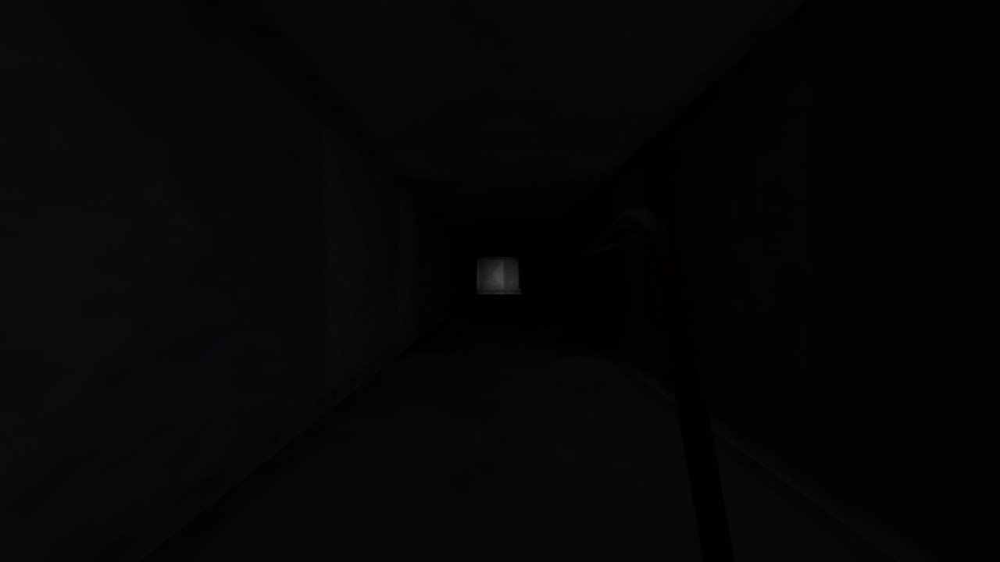
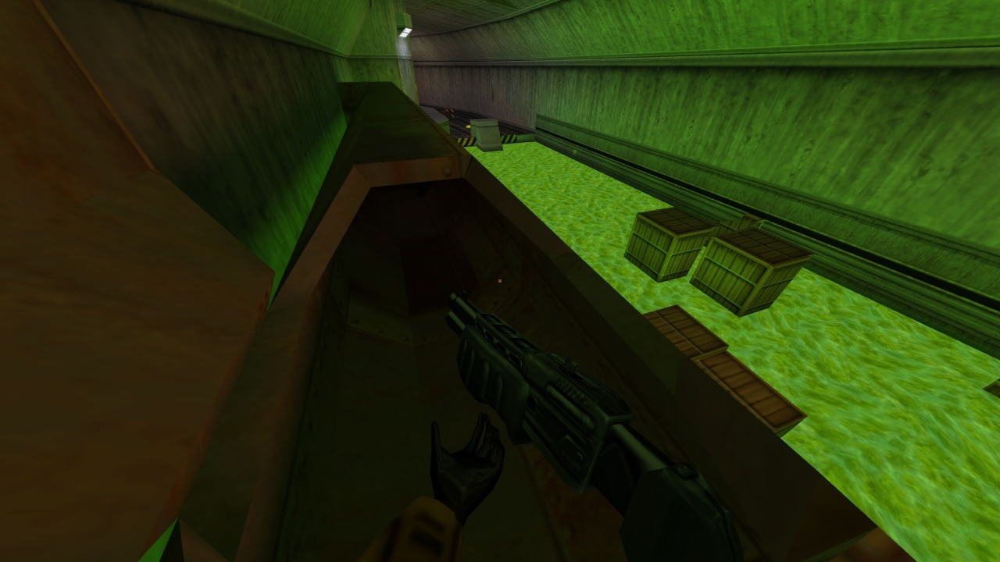
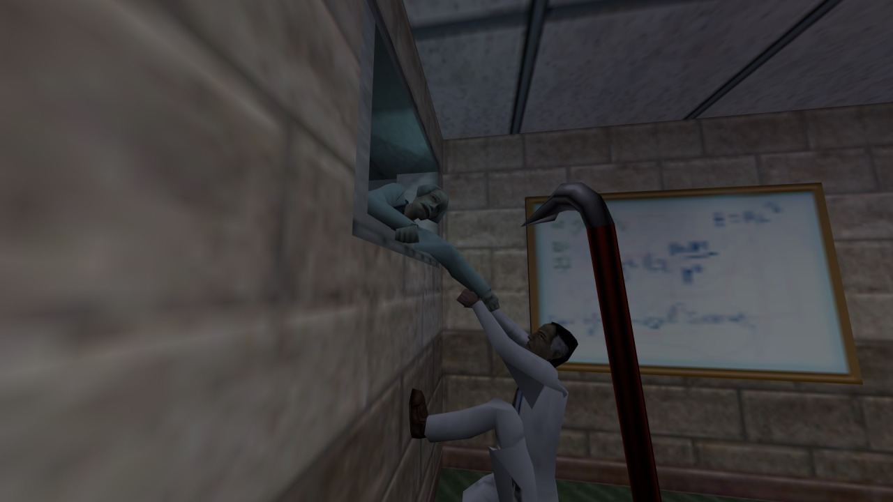
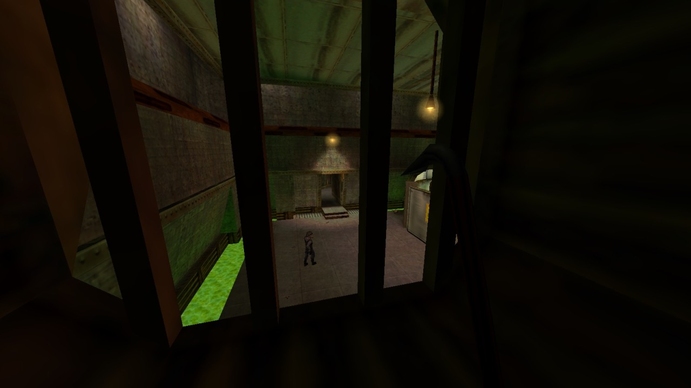
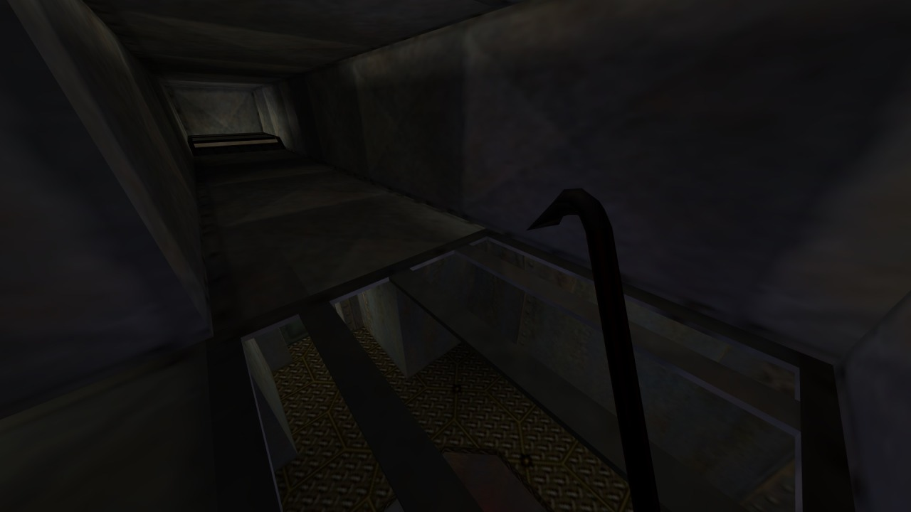
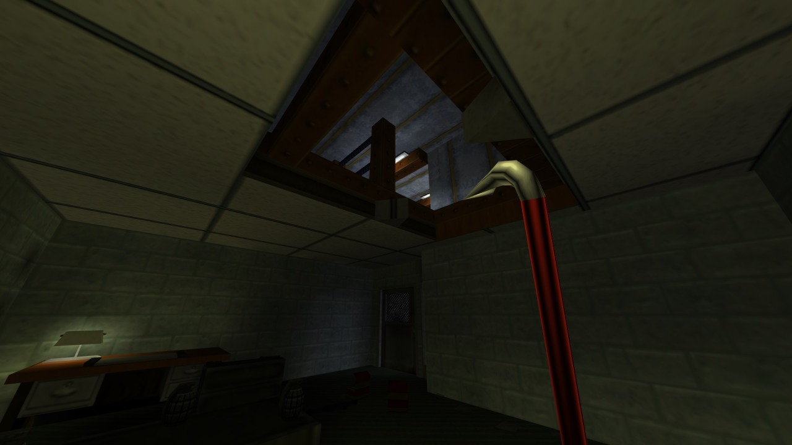

Of all the things Gordon Freeman has acquired a reputation
for doing over the years—bludgeoning alien zombies with a crowbar, staring
mutely at the characters emoting around him, applying his PhD to patronisingly
simple Newtonian physics problems—I think the one I’d be most hesitant to do in
real life is just crawling through a vent. You’re stuck in a dark,
claustrophobic, maze-like space, getting a faceful of stale air blowing in from
god-knows-where, and since you can’t turn around without a five week course in
advanced body contortion, your only option when attacked from behind is to
flail hopelessly and hope your buttocks don’t look too enticing. Oh yes, and as
Mythbusters handily showed us, you can’t actually move anywhere without making
enough noise to alert everybody in the building to your position, direction, and clumsy lack of progress.
Worst of all, in both real- and Half-Life, vents are just
really bloody boring.

They are, though, aren’t they? Crawling through a vent in
Half-Life is like being forced to walk down a very long, dark, featureless
corridor with both your feet tied to a reluctant St. Bernard, and despite many efforts to the contrary, there are only so many ways you can spice up the
experience before I begin to regard their entrances with the resigned sigh of a
sewage technician who wore his good jeans to work on the day that the mains burst. The architecture is
inherently dull, no matter how many dusty fans and offshoots you add, and
unfortunately one set of metal duct panels looks more or less like any other
set of metal duct panels, so meaningful navigation is out of the question.
Combat encounters are limited to headcrabs leaping out in a fruitless attempt
to surprise you, and puzzles aren’t even on the table. The only particularly
interesting thing Valve has ever really done with vents is set-pieces, and even
then, after the second or third one collapses out from underneath him, one
can’t help wondering if Gordon needs to cut down on the headcrab hamburgers.
And yet it wouldn’t be Half-Life without vents. Vents are an
icon of Half-Life, every bit as essential as the crowbar, and they didn’t earn
that distinction just because somebody on the team got off on the thought of a
theoretical physicist struggling to make headway in a cramped, sweaty, metal hole;
they’re a fundamental tool of the level design, and Half-Life couldn’t have
been the same game without them.

To understand vents, we have to realise that they are nothing
more than the most common representation of a level design trope that gets used
all throughout the Half-Life games. I dare say that professional level
designers have some wonderful term for it, but since I’m just a hack with a
desk covered in coffee stains and a hard drive full of lousy deathmatch maps,
I’m going to call this trope the ‘intermediate space’. Intermediate spaces
don’t show up on the map; they’re behind the walls, beneath the floors, above
the ceilings. They’re the places that normal people are never supposed to
traverse; the spaces that practically defined Gordon Freeman’s journey through
the ruined Black Mesa: vents, pipes, chutes, wiring ducts, false ceilings,
gangways, crawl-spaces, elevator shafts, rafters, dumbwaiters, maintenance
holes, hatches and tunnels. They’re cramped, they’re dangerous, and they worm
their way unseen throughout the facility, momentarily surfacing only to
disappear back into its depths. Vents are simply the most famous and widespread
of the litter.
Why does it matter if these spaces exist? To answer that,
we have to realise that Half-Life’s level design—as well as the level design of
the innumerable games that borrowed from it—is, at its heart, a compromise. To
you and I, fans of the golden age of first-person shooters, the word ‘realism’
can leave a bit of a sour taste depending on your personal experiences, but in
their own way, that’s exactly what Half-Life’s environments shot for. Whatever
creative license the mad science of Black Mesa gave Valve, they were still
frequently creating contemporary, believable spaces: offices, storage rooms, hallways, parking
lots, bathrooms, warehouses, security checkpoints, all logically arranged and
framed by sensible architecture. Black Mesa was supposed to feel realistic,
unbroken, seamless, like a proper place, free of such fundamentally video-game-y
concepts as ‘levels’ or 'zones’.

Except you can’t really do that. No seriously, you can’t. If
you want to make a linear first-person shooter with finely-balanced pacing and
interesting combat encounters, the absolute last thing you want out of your
level design—the abstract structure of the maps, not all the visual stuff that
gets slapped into them—is realism. Architects don’t plan for gunfights;
warehouse workers don’t arrange their cargo into stacks of cover. Buildings are
supposed to facilitate free movement through them, not squeeze everybody
through choke-points and one-way corridors. Half-Life is a twelve-hour-long
tube with train rides at both ends, but does it feel like it? No, Black Mesa
feels like a believable space in a way that few first-person shooter settings
at the time could claim. It takes realistic architecture and carefully moulds
it around areas, arenas, routes and transitions, like papier mâché around an
unnerving wireframe skeleton, to create a space that superficially looks
convincing but ultimately puts gameplay first.
But of course, as is usually the case with this kind of
thing, the logic of the world doesn’t always fit snugly to the structure of the
levels. Freeman enters the freezer through the door, but where’s he going to
come out? How’s he going to get from this rocket exhaust tunnel to this train
station, or from this office corridor to this cargo bay? With vents, and pipes,
and crawl-spaces galore, that’s how. Are there structural conventions that
ventilation systems ought to follow? Of course, but nobody knows or cares what
they are. They can start anywhere and finish anywhere, needing nothing but a
small section of flat wall and an unobstructed flow of air to seem believable. Intermediate
spaces are the semicolons of Half-Life’s level design; an elegant way of having
one space logically follow from another without having to explicitly show how
they’re related. They are the paste that seals the cracks in the façade; the
kind of all-purpose, industrial-strength filler that makes your nostril hairs
shrivel up in disgust but grips like the jaws of death without so much as a
seam.

But that’s far from the end of
intermediate spaces’ virtues. One of their more interesting applications,
exemplified in Office Complex and the chapter that follows it, We’ve Got
Hostiles, is where they’re used not just as a way of smoothing out the
transitions between areas, but as a way of making our perception of how those
areas are spatially organised more nuanced. Y'see, the thing about Half-Life’s
level design, especially in Black Mesa’s unending subterranean tunnels, is that
it tends to sprawl like a sloshed middle-aged football fan on the Saturday
night train; there’s no obligation to make rooms fit together snugly, so
there’s a lot of negative space behind the walls that we just unconsciously
assume is filled with something, be it inaccessible rooms, storage
closets, maintenance cavities, or just a load of solid sedimentary rock. If I
can be extra pretentious for a second, this negative space exists in a kind of
quantum superposition of states; it could be any number of things, but since we
can’t actually find out, it remains an amorphous mystery, framing the
environments with the vague promise that there is, in some way, more to the facility than what you can see.
Most of Half-Life follows this pattern: a linear sequence of areas worming
their way through the void, surrounded by hints of a theoretical Black Mesa
that’s a lot more structurally logical—or at least, was a lot more structurally logical, before everything went to
hell.

Here and there, with the help of
some cleverly-structured vents, we get a glimpse of that Black Mesa. Intermediate
spaces aren’t just used as a means of transitioning from A to B, but from A back to A; they loop around, showing us
the same places in a new light, revealing their subtle interconnectedness. Who
can forget taking refuge from the military’s bombardment in an air duct only to
peek through a grate below and see the storage bays from earlier in the chapter?
Who can forget taking a detour through the cold room’s vents and emerging on
the far side of the door that had previously stumped them? The false ceilings
of the tacky fifties offices promise acres of hidden cavities, and multiple
times you’ll fall through one only to find yourself in a familiar room. “Look,”
the game whispers, beckoning tantalisingly. “Everything fits together, like a
real building.” It peels back the walls, populates small pockets of the void, and
lends the sense that the world beyond the playable space has, in some small
way, coalesced into something more defined.

So yes, in spite of them sitting in
the core gameplay experience like a lump of soggy tissue paper in a bowl of
Weet-Bix, I’m glad that Half-Life has such an unshakeable love for vents. Sure,
there are plenty of places where they could be supplanted by more visually
interesting and diverse intermediate spaces, but none are as ubiquitous in the
world or as flexible as the humble ventilation duct. It’s a workhorse of level
design; not especially engaging in itself, but capable of adding layers of depth
and authenticity to the environments of a linear, tightly-paced shooter that
few of its contemporaries can claim to have achieved. In a perfect world, vents
wouldn’t have to be prevalent in a Half-Life game; every area would flow seamlessly
into another without breaking the illusion of believable architecture or
destroying the level design, and you’d be subtly funnelled through the levels
without their linear structure ever standing out. In our imperfect world, full
of compromises and patch-jobs and necessary shortcuts, they’re the next best
thing.